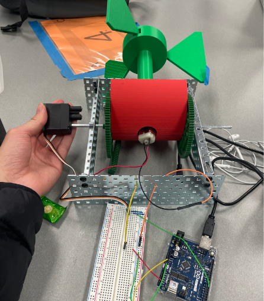

For my senior year's Invention Convention, my team and I set out with what we thought was a groundbreaking idea:
redesign a wind turbine so it could work better in urban environments. Turns out, that's a lot easier said than done.
For inspiration, we turned to biomimickry and tried to model a turbine based off of the shape of a mapleseed (the seeds
that spin as they fall off the tree). After a couple of weeks of messing around with sketches, rough CAD models, and debates
with our engineering teacher, we hit a wall. It turns out that a lot of incredibly smart and knowledgable people are working
on doing the exact same thing, and they have had little to no progress either. So, we pivoted.
Our next idea was to create a prototype that could adjust the pitch of a vertical-axis wind turbine's blades, so it could tilt
itself toward the wind. Picture one of those helix-shaped vertical-axis turbines you see in wind farms, but with a base that
can lean in a 180 degree arc based on where the wind's coming from. We built it out of scrap wood, some old metal parts,
and 3D printed pieces we knocked out in the school's maker space. At the core of it was a motor in the axis to measure backvoltage,
which we hoped would give us a decent read on energy generation. We also fixed a servo to a secondary axis that would allow us to
modify the pitch of the turbine. After much testing, we were able to generate about 0.2 V!! Such energy generation, even over a long,
long time, is completely useless. So again we pivoted.

But if we can't generate energy with the turbine, what can we use it for? We still had the functionality of the servo to adjust the pitch,
so what if we instead used it to collect data about the wind in a specific area? That was the basis of our final design: a centralized sensor
network that would send data back to a predictive 3d model of the wind in a specific location (i.e. a city). To reinforce our final design to the
judges, I used Unity to create a demo of the predictive model in action. It allows for WASD flythrough as well as a button to reset the sensors and
randomize their data. Then, the flow lines are updated using proximity and direct sight logic. You can compile the demo for yourself
here.
Overall, we placed 2nd in the Americas competition, which is the highest level of competition for the Invention Convention. Other awards include
the Energy Award at the US Nationals level (I think we had also won 1st because we moved on, but in the rules it specified that you were only allowed to
win one award), and 1st Place + Energy Award at the Michigan level. I'd also like to thank RTX for sponsoring the competition, as well as ITC for sponsoring
the Energy Awards, giving us a tour of their headquarters in Novi, and opening up doors for a potential internship in the Planning division.